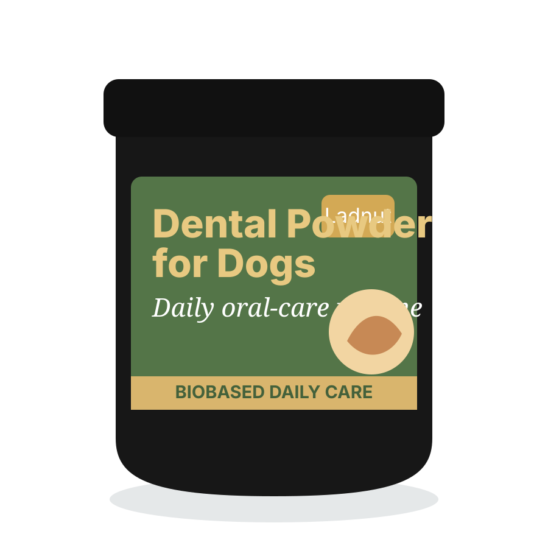
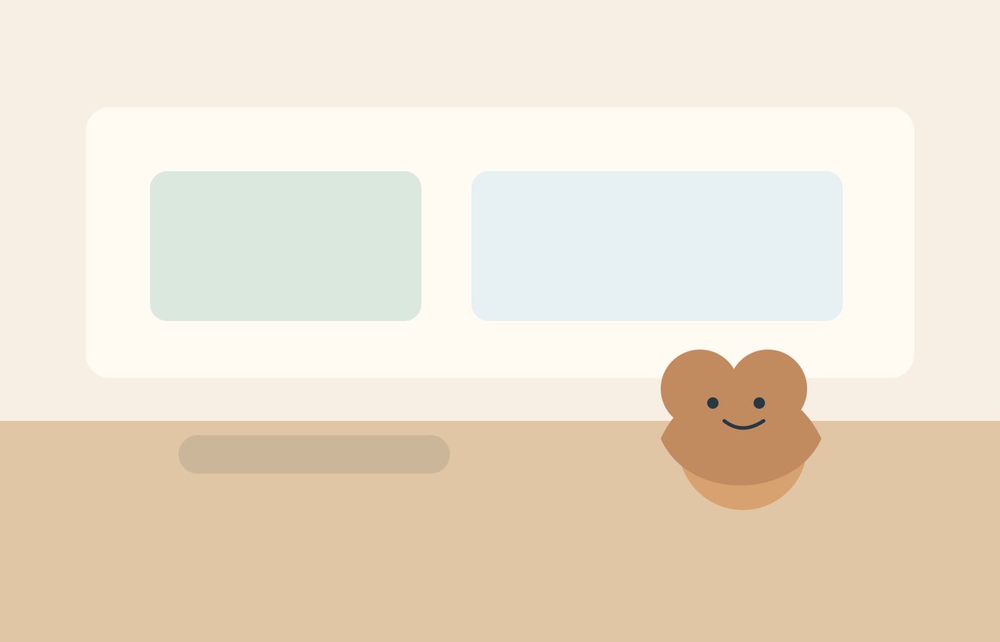
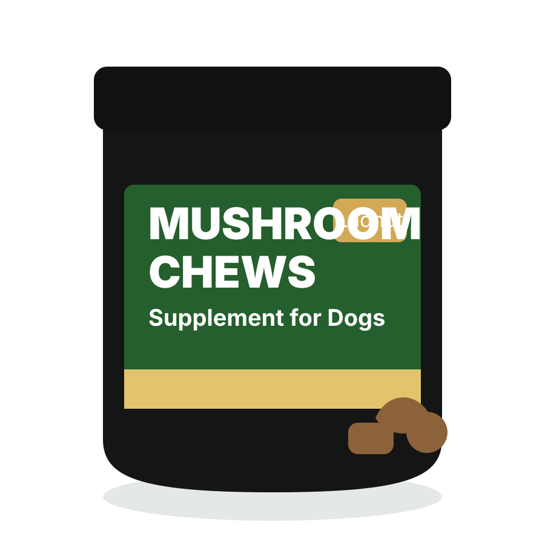
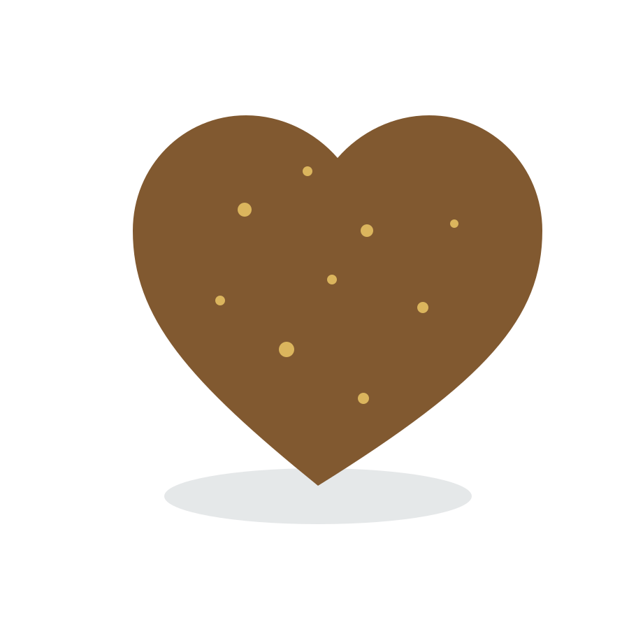
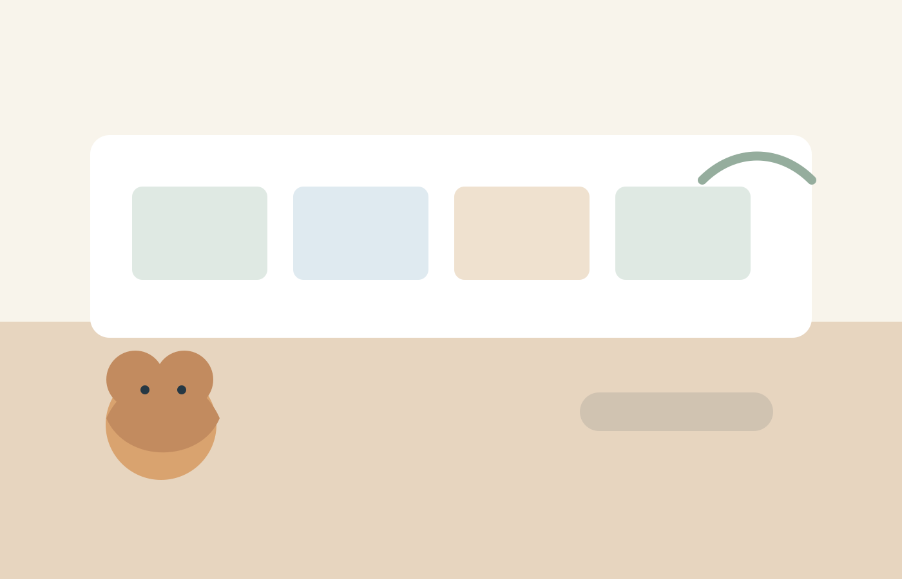

Oral hygieneMealtime routine
Dental Powder for Dogs
A simple addition to daily meals for an easier oral-care routine.
Shop nowDaily Wellness Care Series
BioRoutine™ Daily Wellness Care helps pet families build repeatable rituals that support oral hygiene, senior dog vitality, immune balance, and inside-out wellness.

BioRoutine™ care architecture
Each module is written as a product education tile, keeping the copy warm, clear, and claim-conscious for a storefront environment.
Mealtime formats that make everyday oral-care habits easier to remember.
Gentle routine cues for aging dogs and busy families.
Biology-based positioning for everyday wellness support.
Products designed to become part of regular household rhythms.
Shoppable product modules
Premium product cards use clear CTAs and educational tags instead of price, discount, urgency, or clutter.

A simple addition to daily meals for an easier oral-care routine.
Shop now
A treat-like routine format designed for everyday wellness support.
Shop now
Warm, familiar textures that help daily care feel less like a task.
Shop nowIngredient story module
Explain product routines through simple ingredient and format stories. Keep the science approachable, avoid medical promises, and make the shopping path easy to follow.
Designed to fit mealtime and reward moments.
Short instructions support confident daily use.
